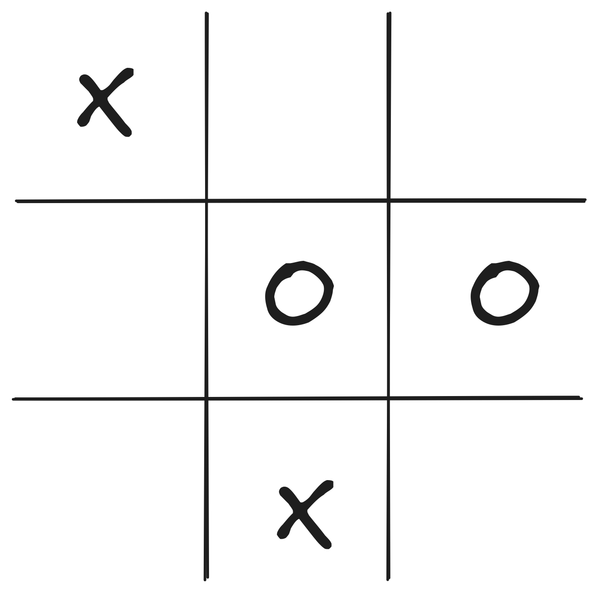
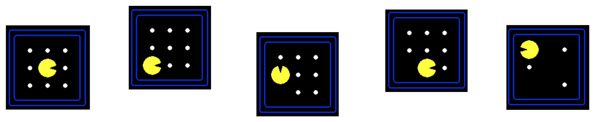
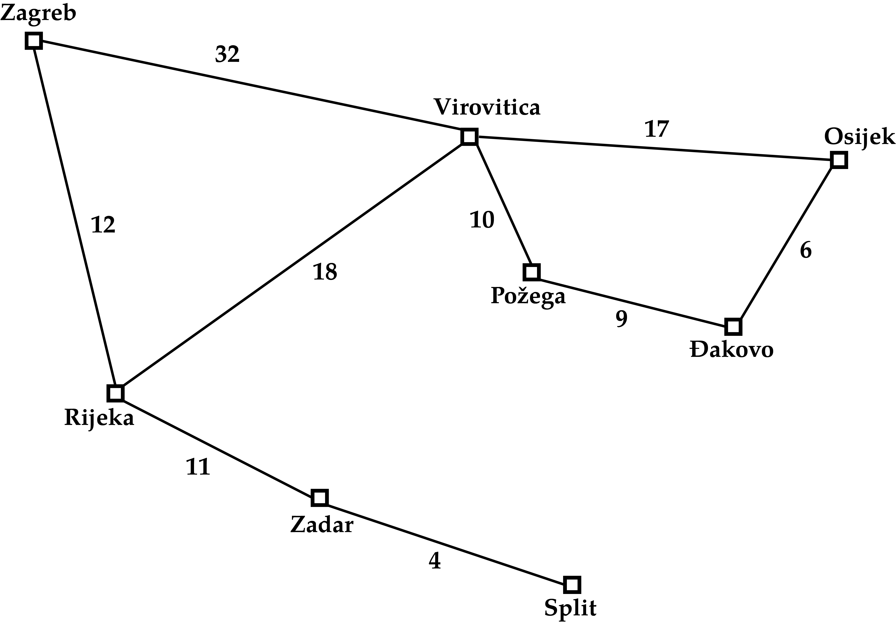
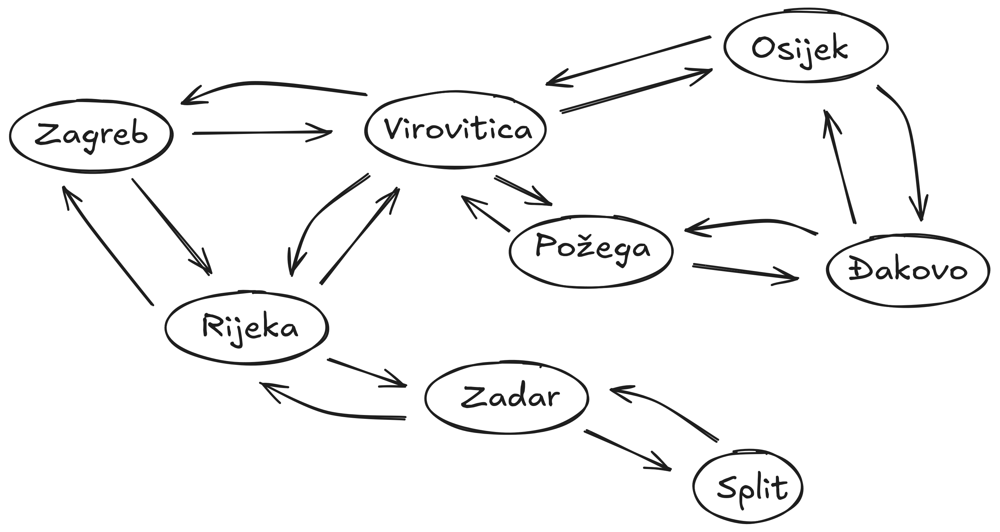

Midterm Review
CSCI 4511/6511
Announcements
- Homework 3 is released
- Working with one partner is optionally permitted
- 20 point bonus if turned in by 4 Mar
- Due 15 Mar
- Midterm Exam on 6 Mar
- Project spec released
Midterm Exam on 6 Mar
- In lecture
- DUQ 359, 12:45 PM
- 100 minutes
- Open note:
- Ten sides1 of handwritten notes permitted
Review
What Won’t Be On The Exam
- Gradient descent
- Probability from last week:1
- Bayes’ Theorem
- Joining Factors
- Conditional distributions
The Rational Agent
- Has a utility function
- Maximizes expected utility
- Sensors: perceives environment
- Actuators: influences environment
What is in between sensors and actuators?
The agent function.
Reflex Agent
- Very basic form of agent function
- Percept \(\rightarrow\) Action lookup table
- Good for simple games
- Tic-tac-toe
- Checkers?
- Needs entire state space in table

State Space Size
- Tic-tac-toe: \(10^3\)
- Checkers: \(10^{20}\)
- Chess: \(10^{44}\)
- Go: \(10^{170}\)
- Self-driving car: ?
- Pacman?
- How could you estimate it?
In Practice
- Environment
- What happens next
- Perception
- What agent can see
- Action
- What agent can do
- Measure/Reward
- Encoded utility function
Search
- Fully-observed problem
- Deterministic actions and state
- Well defined start and goal
Not Search
- Uncertainty
- State transitions known
- Adversary
- Nobody wants us to lose
- Cooperation
- Continuous state
Search Problem
Search problem includes:
- Start State
- State Space
- State Transitions
- Goal Test
State Space:

Actions & Successor States:

State Space
State Space Graph
Graph vs. Tree
How To Solve It
Given:
- Starting node
- Goal test
- Expansion
Do:
- Expand nodes from start
- Test each new node for goal
- If goal, success
- Expand new nodes
- If nothing left to expand, failure
Queues & Searches
- Priority Queues
- Best-First Search
- Uniform-Cost Search1
- FIFO Queues
- Breadth-First Search
- LIFO Queues2
- Depth-First Search
Search Features
- Completeness
- If there is a solution, will we find it?
- Optimality
- Will we find the best solution?
- Time complexity
- Memory complexity
Uninformed Search Variants
- Depth-Limited Search
- Fail if depth limit reached (why?)
- Iterative deepening
- vs. Breadth-First Search
- Bidirectional Search
Heuristics
heuristic - adj - Serving to discover or find out.1
- We know things about the problem
- These things are external to the graph/tree structure
- We could model the problem differently
- We can use the information directly
Choosing Heuristics
- Admissibility
- Never overestimates cost from \(n\) to goal
- Cost-optimal!
- Consistency
- \(h(n) \leq c(n, a, n') + h(n')\)
- \(n'\) successors of \(n\)
- \(c(n, a, n')\) cost from \(n\) to \(n'\) given action \(a\)
Weighted A* Search
- Greedy: \(f(n) = h(n)\)
- A*: \(f(n) = h(n) + g(n)\)
- Uniform-Cost Search: \(f(n) = g(n)\)
- Weighted A* Search: \(f(n) = W\cdot h(n) + g(n)\)
- Weight \(W > 1\)
Iterative-Deepening A* Search
“IDA*” Search
- Similar to Iterative Deepening with Depth-First Search
- DFS uses depth cutoff
- IDA* uses \(h(n) + g(n)\) cutoff with DFS
- Once cutoff breached, new cutoff:
- Typically next-largest \(h(n) + g(n)\)
- \(O(b^m)\) time complexity üòî
- \(O(d)\) space complexity1 üòå
Beam Search
Best-First Search:
- Frontier is all expanded nodes
Beam Search:
- \(k\) “best” nodes are kept on frontier
- Others discarded
- Alt: all nodes within \(\delta\) of best node
- Not Optimal
- Not Complete
Where Do Heuristics Come From?
- Intuition
- “Just Be Really Smart”
- Relaxation
- The problem is constrained
- Remove the constraint
- Pre-computation
- Sub problems
- Learning
Local Search
Uninformed/Informed Search:
- Known start, known goal
- Search for optimal path
Local Search:
- “Start” is irrelevant
- Goal is not known
- But we know it when we see it
- Search for goal
Objective Function
- Do you know what you want?
- Can you express it mathematically?
- A single value
- More is better
- Objective function: a function of state
Hill-Climbing
- Objective function
- State space mapping
- Neighbors
Hazards:
- Local maxima
- Plateaus
- Ridges
Variations
- Sideways moves
- Not free
- Stochastic moves
- Full set
- First choice
- Random restarts
- If at first you don’t succeed,
you failtry again! - Complete üòå
- If at first you don’t succeed,
Simulated Annealing
- Search begins with high “temperature”
- Temperature decreases during search
- Next state selected randomly
- Improvements always accepted
- Non-improvements rejected stochastically
- Higher temperature, less rejection
- “Worse” result, more rejection
Local Beam Search
Recall:
- Beam search keeps track of \(k\) “best” branches
Local Beam Search:
- Hill climbing search, keeping track of \(k\) successors
- Deterministic
- Stochastic
Gradient Descent
- Minimize loss instead of climb hill
- Still the same idea
Consider:
- One state variable, \(x\)
- Objective function \(f(x)\)
- How do we minimize \(f(x)\) ?
- Is there a closed form \(\frac{d}{dx}\) ?
Gradient Descent
Multivariate \(\vec{x} = x_0, x_1, ...\)
Instead of derivative, gradient:
\(\nabla f(\vec{x}) = \left[ \frac{\partial f}{\partial x_0}, \frac{\partial f}{\partial x_1}, ...\right]\)
“Locally” descend gradient:
\(\vec{x} \gets \vec{x} + \alpha \nabla f(\vec{x})\)
I will not ask you to take a derivative on the exam.
Adversity
So far:
- The world does not care about us
- This is a simplifying assumption!
Reality:
The world does not care us
It wants things for “itself”
We don’t want the same things
The Adversary
One extreme:
- Single adversary
- Adversary wants the exact opposite from us
- If adversary ‚Äúwins,‚Äù we lose üòê
Other extreme:
- An entire world of agents with different values
- They might want some things similar to us
- ‚ÄúEconomics‚Äù üòê
Simple Games: Max and Min
- Two players want the opposite of each other
- State takes into account both agents
- Actions depend on whose turn it is
Minimax
- Initial state \(s_0\)
- Actions(\(s\)) and To-move(\(s\))
- Result(\(s, a\))
- Is-Terminal(\(s\))
- Utility(\(s, p\))
More Than Two Players
- Two players, two values: \(v_A, v_B\)
- Zero-sum: \(v_A = -v_B\)
- Only one value needs to be explicitly represented
- \(> 2\) players:
- \(v_A, v_B, v_C ...\)
- Value scalar becomes \(\vec{v}\)
Minimax Efficiency
Pruning removes the need to explore the full tree.
- Max and Min nodes alternate
- Once one value has been found, we can eliminate parts of search
- Lower values, for Max
- Higher values, for Min
- Remember highest value (\(\alpha\)) for Max
- Remember lowest value (\(\beta\)) for Min
Heuristics üòå
- In practice, trees are far too deep to completely search
- Heuristic: replace utility with evaluation function
- Better than losing, worse than winning
- Represents chance of winning
- Chance? üé≤üé≤
- Even in deterministic games
- Why?
Solving Non-Deterministic Games
Previously: Max and Min alternate turns
Now:
- Max
- Chance
- Min
- Chance
Constraint Satisfaction
- Express problem in terms of state variables
- Constrain state variables
- Begin with all variables unassigned
- Progressively assign values to variables
- Assignment of values to state variables that “works:” solution
More Formally
- State variables: \(X_1, X_2, ... , X_n\)
- State variable domains: \(D_1, D_2, ..., D_n\)
- The domain specifies which values are permitted for the state variable
- Domain: set of allowable variables (or permissible range for continuous variables)1
- Some constraints \(C_1, C_2, ..., C_m\) restrict allowable values
Constraint Types
- Unary: restrict single variable
- Can be rolled into domain
- Why even have them?
- Binary: restricts two variables
- Global: restrict “all” variables
Assignments
- Assignments must be to values in each variable’s domain
- Assignment violates constraints?
- Consistency
- All variables assigned?
- Complete
Four-Colorings
Two possibilities:

Graph Representations
- Constraint graph:
- Nodes are variables
- Edges are constraints
- Constraint hypergraph:
- Variables are nodes
- Constraints are nodes
- Edges show relationship
Why have two different representations?
Graph Representation I
Constraint graph: edges are constraints

Graph Representation II
Constraint hypergraph: constraints are nodes
Inference
- Constraints on one variable restrict others:
- \(X_1 \in \{A, B, C, D\}\) and \(X_2 \in \{A\}\)
- \(X_1 \neq X_2\)
- Inference: \(X_1 \in \{B, C, D\}\)
- If an unassigned variable has no domain…
- Failure
Inference
- Arc consistency
- Reduce domains for pairs of variables
- Path consistency
- Assignment to two variables
- Reduce domain of third variable
Ordering
- Select-Unassgined-Variable(\(CSP, assignment\))
- Choose most-constrained variable1
- Order-Domain-Variables(\(CSP, var, assignment\))
- Least-constraining value
- Why?
Restructuring
Tree-structured CSPs:
Linear time solution
Directional arc consistency: \(X_i \rightarrow X_{i+1}\)
Topological sort complexity
- Nothing is free
Logic
- Propositional symbols
- Similar to boolean variables
- Either True or False
- Represent something in “real world”
Sentences
- What is a linguistic sentence?
- Subject(s)
- Verb(s)
- Object(s)
- Relationships
- What is a logical sentence?
- Symbols
- Relationships
Familiar Logical Operators
- \(\neg\)
- “Not” operator, same as CS (
!,not, etc.)
- “Not” operator, same as CS (
- \(\land\)
- “And” operator, same as CS (
&&,and, etc.) - This is sometimes called a conjunction.
- “And” operator, same as CS (
- \(\lor\)
- “Inclusive Or” operator, same as CS.
- This is sometimes called a disjunction.
Unfamiliar Logical Operators
- \(\Rightarrow\)
- Logical implication.
- If \(X_0 \Rightarrow X_1\), \(X_1\) is always True when \(X_0\) is True.
- If \(X_0\) is False, the value of \(X_1\) is not constrained.
- Logical implication.
- \(\iff\)
- “If and only If.”
- If \(X_0 \iff X_1\), \(X_0\) and \(X_1\) are either both True or both False.
- Also called a biconditional.
Equivalent Statements
- \(X_0 \Rightarrow X_1\) alternatively:
- \((X_0 \land X_1) \lor \neg X_0\)
- \(X_0 \iff X_1\) alternatively:
- \((X_0 \land X_1) \lor (\neg X_0 \land \neg X_1)\)
Entailment
- \(KB \models A\)
- “Knowledge Base entails A”
- For every model in which \(KB\) is True, \(A\) is also True
- One-way relationship: \(A\) can be True for models where \(KB\) is not True.
- Vocabulary: \(A\) is the query
Knowing Things
Falsehood:
- \(KB \models \neg A\)
- No model exists where \(KB\) is True and \(A\) is True
It is possible to not know things:1
- \(KB \nvdash A\)
- \(KB \nvdash \neg A\)
Satisfiability
Commonly abbreviated “SAT”
First NP-complete problem
\((X_0 \land X_1) \lor X_2\)
- Satisfied by \(X_0 = \text{True}, X_1 = \text{False}, X_2 = \text{True}\)
- Satisfied for any \(X_0\) and \(X_1\) if \(X_2 = \text{True}\)
\(X_0 \land \neg X_0 \land X_1\)
- Cannot be satisfied by any values of \(X_0\) and \(X_1\)
Conjunctive Normal Form
- Literals — symbols or negated symbols
- \(X_0\) is a literal
- \(\neg X_0\) is a literal
- Clauses — combine literals and disjunction using disjunctions (\(\lor\))
- \(X_0 \lor \neg X_1\) is a valid disjunction
- \((X_0 \lor \neg X_1) \lor X_2\) is a valid disjunction
Conjunctive Normal Form
- Conjunctions (\(\land\)) combine clauses (and literals)
- \(X_1 \land (X_0 \lor \neg X_2)\)
- Disjunctions cannot contain conjunctions:
- \(X_0 \lor (X_1 \land X_2)\) not in CNF
- Can be rewritten in CNF: \((X_0 \lor X_1) \land (X_0 \lor X_2)\)
Converting to CNF
- \(X_0 \iff X_1\)
- \((X_0 \Rightarrow X_1) \land (X_1 \Rightarrow X_0)\)
- \(X_0 \Rightarrow X_1\)
- \(\neg X_0 \lor X_1\)
- \(\neg (X_0 \land X_1)\)
- \(\neg X_0 \lor \neg X_1\)
- \(\neg (X_0 \lor X_1)\)
- \(\neg X_0 \land \neg X_1\)
References
Stuart J. Russell and Peter Norvig. Artificial Intelligence: A Modern Approach. 4th Edition, 2020.
Mykal Kochenderfer, Tim Wheeler, and Kyle Wray. Algorithms for Decision Making. 1st Edition, 2022.
Stanford CS231
Stanford CS228
UC Berkeley CS188